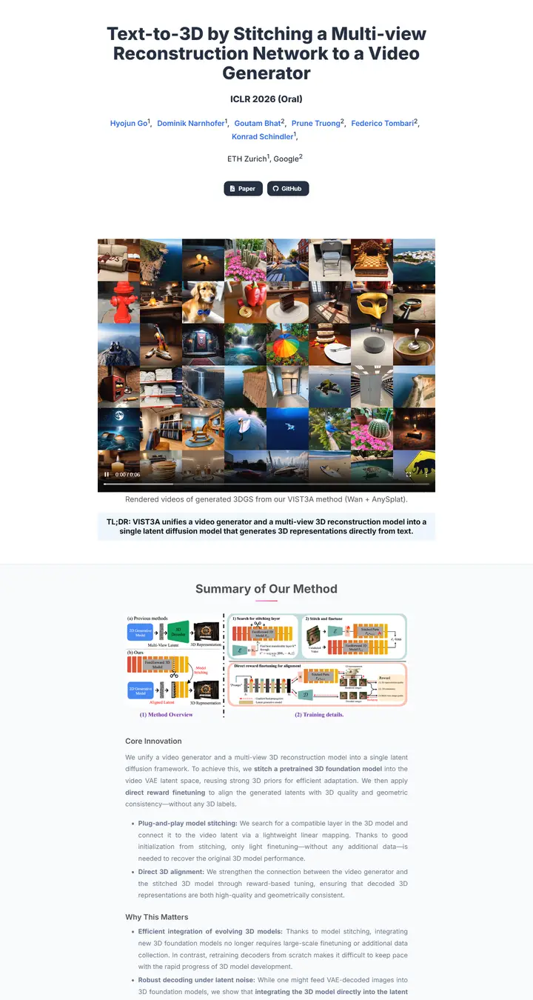

Text-to-3D by Stitching a Multi-view Reconstruction Network to a Video Generator
生成された小さな世界を並べたギャラリーの壁。キリッとしたスレート色の文字と、ピンクのチェックがひとつ。

表示されたページと照合済みです。
選んだ理由
生成結果をぎっしり並べたモザイク動画が、目を引くティーザーになっています。その下に TL;DR の囲み、淡く色づけした手法セクション、見出しの下のアクセントの下線が続きます。抑制のきいたタイポグラフィで、余白の使い方も上手です。
以下の説明と DESIGN.md 本文は英語です。コーディングエージェントが同じ一つの版を読めるよう、翻訳していません。
概要
カラーパレット
タイポグラフィ
Inter
Text-to-3D by Stitching a Multi-view Reconstruction Network to a Video
Abstract · Method · Results · BibTeX — 0123456789
余白と形
ページの構成要素
ガイドライン
似たスタイル

GAMEBoT: Transparent Assessment of LLM Reasoning in Games
整ったゲームアリーナのスコアボード。ネイビーのタイトルの上にマスコットの紋章、その下のひんやりした灰青のグラデーション帯にニュースカードと、すみれ色の見出しのスコア表。

InstructPart: Task-Oriented Part Segmentation with Instruction Reasoning
グレーと白の縞模様の実験ノート。タイトルは自らのキーワードをティールで示し、破線パネルのやかんが、一行も読まないうちにタスクを説明してくれる。

Symmetrical Visual Contrastive Optimization: Aligning Vision-Language Models with Minimal Contrastive Images
2色で組み立てた主張。シアンは一致する画像、オレンジは一致しない画像を意味し、その色のコードは本文のハイライトから、グレーと白が交互に続く帯の上のすべての図まで途切れずに続く。

Slamming: Training a Speech Language Model on One GPU in a Day
グラフひとつで語る主張。ティーザー動画があるはずの場所に注釈付きの大きなスケーリングプロットを置き、続いてグレーのアブストラクトと、GPU 予算のタグが付いたオーディオプレーヤーの静かなグリッド。

Peeking Ahead of the Field Study: Exploring VLM Personas as Support Tools for Embodied Studies in HCI
白い机にテープで開いて留めたフィールドノート。背の高い淡いグレーの見出し、空色で長く連なる名前、そしてサーモンから砂色へ移ろう3コマの絵コンテが研究を説明する。

Reflection Separation from a Single Image via Joint Latent Diffusion
ひと引きで拭い去れる、夜のガラス一枚。